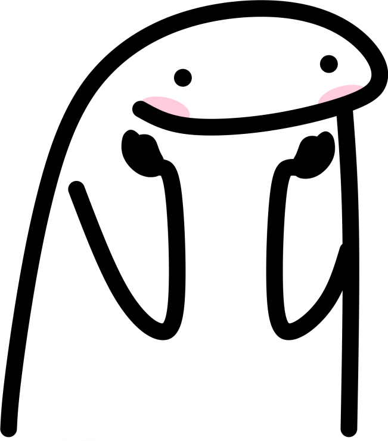

Razon #5.
Te quiero como nadie lo ha hecho, eres la persona que mas aprecio en estos momentos. Y perdon por aveces ser tan cursi o me paso de cariñoso, si te vieras desde mis ojos creo que entenderias el por que aveces puedo llegar a ser tan intenso. Te quise, te quiero y siempre te voy a querer, sin importar el tiempo, la distancia o las complicaciones que pasen entre nosotros dos.
